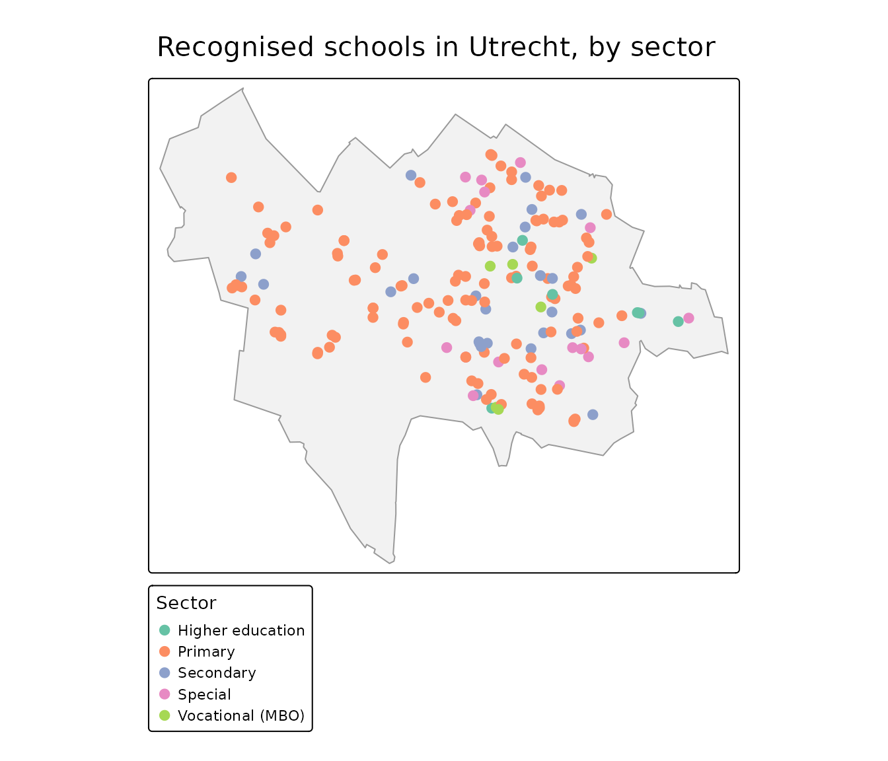

Combining with external data: school locations (DUO)
Source:vignettes/articles/duo-schools.Rmd
duo-schools.RmdPDOK is rarely the only source you need. A common pattern is to take a table from another open API, turn it into spatial data, and combine it with authoritative PDOK geometry. This article does that with DUO’s open data on schools — and shows that combining sources often means a little data wrangling first.
library(pdokr)
library(tmap)
library(sf)
#> Linking to GEOS 3.12.1, GDAL 3.8.4, PROJ 9.4.0; sf_use_s2() is TRUE
library(dplyr)
#>
#> Attaching package: 'dplyr'
#> The following objects are masked from 'package:stats':
#>
#> filter, lag
#> The following objects are masked from 'package:base':
#>
#> intersect, setdiff, setequal, union
library(httr2)DUO publishes its data through a CKAN open-data API. Every table
is one resource. Some are large, so this helper fetches one in pages,
letting httr2 retry any request that drops.
read_duo <- function(resource_id, page_size = 5000) {
pages <- list()
offset <- 0
repeat {
resp <- request("https://onderwijsdata.duo.nl/api/3/action/datastore_search") |>
req_url_query(resource_id = resource_id, limit = page_size, offset = offset) |>
req_retry(max_tries = 4) |>
req_perform() |>
resp_body_json(simplifyVector = TRUE)
page <- resp$result$records
if (length(page) == 0) break
pages[[length(pages) + 1]] <- page
if (nrow(page) < page_size) break
offset <- offset + page_size
}
do.call(rbind, pages)
}Fetch the education locations
The onderwijslocaties resource lists every location
where education may take place, each with coordinates and a
BAG_ID.
locations <- read_duo("a7e3f323-6e46-4dca-a834-369d9d520aa8")
nrow(locations)
#> [1] 13601There is a catch: these are possible education locations, not recognised schools. A conference centre that hosts the odd exam, or a commercial training firm, is in here too. Mapping them straight away would put dots where no school exists.
Keep only the recognised schools
To find the schools recognised in law we combine two more DUO tables.
The relaties... resource links a location
(ONDERWIJSLOCATIECODE) to a recognised institution
(VESTIGINGSCODE); the vestigingserkenningen
resource describes that institution — its name and the education law it
falls under (WET). Both tables are historical, so a row
counts only when it has no EINDDATUM.
relations <- read_duo("c18ec7dd-aa4e-4b51-997c-782955f1aa38")
institutions <- read_duo("01fd2a5f-40af-456f-864d-13265a51e5e2")
# translate the education-law code into a readable sector
sectors <- c(WPO = "Primary", WVO = "Secondary", WEC = "Special",
WEB = "Vocational (MBO)", WHW = "Higher education")
# current institutions (no end date), one row each, with a readable sector
institutions <- institutions |>
filter(is.na(EINDDATUM)) |>
distinct(VESTIGINGSCODE, .keep_all = TRUE) |>
mutate(sector = unname(sectors[WET])) |>
select(VESTIGINGSCODE, sector, school = VOLLEDIGE_NAAM)
# current location -> recognised institution, one institution per location
link <- relations |>
filter(is.na(EINDDATUM)) |>
select(ONDERWIJSLOCATIECODE, VESTIGINGSCODE) |>
inner_join(institutions, by = "VESTIGINGSCODE") |>
distinct(ONDERWIJSLOCATIECODE, .keep_all = TRUE)
# inner join drops every location without a recognised institution
schools <- inner_join(locations, link, by = "ONDERWIJSLOCATIECODE")
nrow(schools)
#> [1] 9677
count(schools, sector)
#> sector n
#> 1 Higher education 62
#> 2 Primary 7228
#> 3 Secondary 1476
#> 4 Special 708
#> 5 Vocational (MBO) 203Only the locations backed by a recognised institution remain — no training venues, no exam halls — and each carries its school name and education sector.
One quirk worth knowing: a university or college is registered as a single recognised institution, so only its official location appears here, not its every building. The map below is therefore dominated by primary and secondary schools, which register each site.
Make it spatial and combine with PDOK
The coordinates are WGS84 longitude/latitude, so we build an
sf object and use pdok_filter_by() with a
municipal boundary to zoom in on Utrecht.
schools <- schools |>
filter(!is.na(GPS_LONGITUDE), !is.na(GPS_LATITUDE)) |>
st_as_sf(coords = c("GPS_LONGITUDE", "GPS_LATITUDE"), crs = 4326)
gemeenten <- pdok_read(
"cbs/gebiedsindelingen", "gemeente_gegeneraliseerd", datetime = 2025
)
utrecht <- filter(gemeenten, statnaam == "Utrecht")
utrecht_schools <- pdok_filter_by(schools, utrecht, predicate = "within")
nrow(utrecht_schools)
#> [1] 186
tmap_mode("plot")
#> ℹ tmap modes "plot" - "view"
#> ℹ toggle with `tmap::ttm()`
tm_shape(utrecht) +
tm_polygons(fill = "grey95", col = "grey60") +
tm_shape(utrecht_schools) +
tm_dots(
fill = "sector", size = 0.5,
fill.scale = tm_scale_categorical(values = "brewer.set2"),
fill.legend = tm_legend("Sector")
) +
tm_title("Recognised schools in Utrecht, by sector")
Map the school buildings
Each school sits in a building from the BAG. We read the
pand (building) layer for the historic centre, keep the
footprints that contain a school, and carry the school name and sector
across with a spatial join.
wijken <- pdok_read(
"cbs/gebiedsindelingen", "wijk_gegeneraliseerd", datetime = 2025,
filter_by = utrecht, predicate = "within"
)
binnenstad <- filter(wijken, grepl("Binnenstad", statnaam))
centre_schools <- pdok_filter_by(utrecht_schools, binnenstad, predicate = "within")
panden <- pdok_read("kadaster/bag", "pand", filter_by = binnenstad)
#> ⠙ Downloading PDOK features: 964 fetched
#> ⠹ Downloading PDOK features: 1460 fetched
#> ⠸ Downloading PDOK features: 2785 fetched
#> ⠼ Downloading PDOK features: 5090 fetched
#> ⠴ Downloading PDOK features: 6026 fetched
school_buildings <- panden |>
st_filter(centre_schools) |>
st_join(select(centre_schools, school, sector, STRAATNAAM))
nrow(school_buildings)
#> [1] 11The result is real school buildings, coloured by sector. Click one for the school that uses it.
tmap_mode("view")
#> ℹ tmap modes "plot" - "view"
tm_basemap(pdok_basemap("grijs")) +
tm_shape(school_buildings) +
tm_polygons(
fill = "sector",
fill.scale = tm_scale_categorical(values = "brewer.set2"),
fill.legend = tm_legend("Sector"),
col = "grey30", lwd = 0.5, id = "school",
popup = tm_popup(vars = c("School" = "school", "Sector" = "sector",
"Street" = "STRAATNAAM"))
) +
tm_credits("Kaartgegevens © Kadaster")Where to next
-
Filtering data by area — more
on
pdok_filter_by(). -
Mapping buildings by construction
year — another BAG example, using the
pand(building) layer. - PDOK basemaps — the grey background map used here, and the other styles.